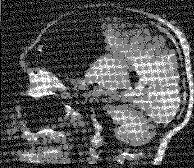

CV
CV Google Scholar
Google Scholar ORCID 0000-0001-6251-6000
ORCID 0000-0001-6251-6000 NIH MyBibliography
NIH MyBibliography Twitter
Twitter PGP (4008 24E6 AE94 28B4 4457 21B7 070D 9527 D5EC 4FC5)
PGP (4008 24E6 AE94 28B4 4457 21B7 070D 9527 D5EC 4FC5)|  |
CV
Google Scholar
ORCID 0000-0001-6251-6000
NIH MyBibliography
Twitter
PGP (4008 24E6 AE94 28B4 4457 21B7 070D 9527 D5EC 4FC5) |